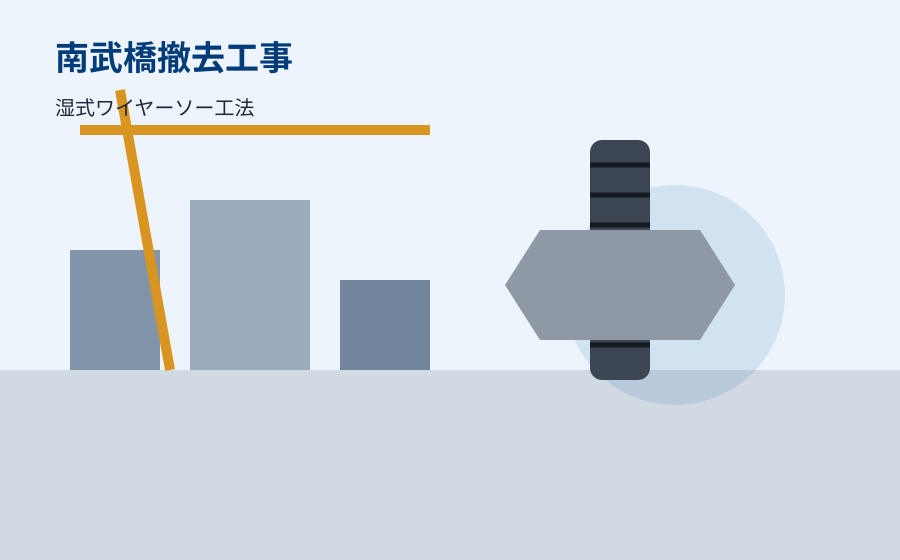

株式会社 ニシワキ
土木工事業・とび工事業・建築工事
ホーム
HOME
会社概要
ABOUT
事業紹介
SERVICE
工事実績
WORKS
代表挨拶
MESSAGE
強み・実績
STRENGTH
お問い合わせ
CONTACT
工事実績

武庫川水系武庫川 南武橋撤去工事
工法
湿式ワイヤーソー工法
作業内容
旧橋撤去工事
施工年度
2025年
施工場所
兵庫県
北部水みらいセンター
工法
あと施工アンカー工事
作業内容
あと施工アンカー引張試験
施工年度
2021年
施工場所
大阪府